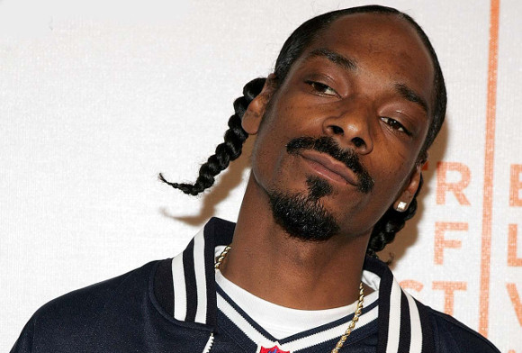

Snoop Dogg
53 years old
53 years old
SNOOP DOGG. In: WIKIPEDIA, the free encyclopedia. Florida: Wikimedia Foundation, 2024. Available at: https://en.wikipedia.org/w/index.php?title=Snoop_Dogg&oldid=68935681 Accessed on: Nov 4, 2024.
Calvin Cordozar Broadus Jr., better known as Snoop Dogg, is an American rapper, singer, songwriter, producer, and actor. His career began in 1990 when he was discovered by Dr. Dre, with whom he collaborated on Deep Cover and on the album The Chronic. His debut album, Doggystyle (1993), was a huge success, selling nearly a million copies in its first week and reaching the top of the Billboard 200. He also released the short film Murder Was the Case (1994), which had the eponymous soundtrack certified double platinum.
In 1996, Snoop released Tha Doggfather, his first album without Dr. Dre’s production, which debuted at the top of the charts. After leaving Death Row Records, he signed with No Limit Records, where he released Da Game Is to Be Sold, Not to Be Told (1998), No Limit Top Dogg (1999), and Tha Last Meal (2000).
In 2002, he signed with Priority, Capitol, and EMI Records and released Paid tha Cost to Be da Bo$$. Later, he signed with Geffen Records, where he released albums like R&G (Rhythm & Gangsta): The Masterpiece (2004) and Tha Blue Carpet Treatment (2006), both of which had hits at the top of the charts.
In 2012, after a trip to Jamaica, Snoop converted to Rastafarianism and released Reincarnated, a reggae album. In 2015, he released Bush, produced by Pharrell Williams, which also reached the top of the charts. Over the course of his career, Snoop Dogg has sold over 60 million records and is one of the most influential figures in hip hop.